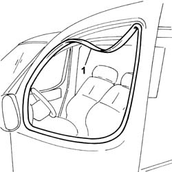

7005D18 front side door descending window glass channel r r
- Path
- Procedures > 70 FITTINGS > 7005 PASSENGER COMPARTMENT FRONT SIDE DOORS > 7005D front side door window glasses > 7005D18 front side door descending window glass channel r r
- Kind
- repair procedure (removal / refitting; the operation number is the code)
- Applies to
- all engines; all production periods
- Interactive page
- https://sloeber94.github.io/elrnDB-fDbl/en/#/2585003
Applies to: all engines; all production periods
 Removing
Removing
 Refitting
RefittingFully lower the front window.
1. Prise the seal out of its seating.

Applies to: all engines; all production periods
Refitting
RemovingCheck that the seal is undamaged.
Fit the seal in its seating, checking that it adheres perfectly along the bodywork flange.
Check, by opening and closing a few times, that the window moves freely.
Topics that link to this page (6)
- V05 FRONT DOOR WATER PENETRATION
- 7005D14 front side door descending window glass - r r with door panel (and mount frame) removed
- 7005D15 front side door descending window glass r r
- 7005D34 front side door manual window mechanism - r r with door panel and mount frame removed
- 7005D35 front side door manual window glass r r
- 7005M21 front side door electrically operated window - r r